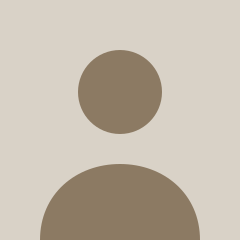

Soy estudiante de Ingeniería en Sistemas de Información en la Universidad Tecnológica Nacional Facultad Regional Villa María y actualmente estoy cursando mi último año de la carrera. Empecé programando en PHP en el secundario y en Python y Java para la facultad. Hoy dedico la mayor parte de mi tiempo libre a la web y a los videojuegos.
Mi principal interés es el desarrollo front-end: me interesa entender cómo una estructura HTML bien pensada y semántica sostiene todo lo que viene después, desde los estilos hasta la accesibilidad. Me gusta especialmente el framework de Angular que me da mucha flexibilidad y manejo de componentes, y estoy aprendiendo React para poder comparar ambos y ver cuál se adapta mejor a mis necesidades.
Fuera de la programación juego al voley, escucho mucha música de géneros variados (principalmente electrónica, rap y jazz) y soy de los que se anotan en cualquier proyecto que involucre armar algo desde cero. Ahora mismo estoy trabajando en mi tesis "ClassRoute" una plataforma web para aprender idiomas en base a los gustos del alumno y generación de ejercicios con IA, y también aporto al sitio web de la ficticia "Mueblería Hermanos Jota" junto a mi equipo, que es donde estoy aplicando casi todo lo que aprendo en la cursada.